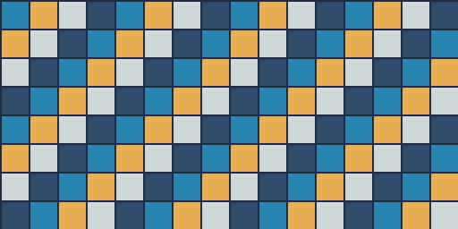
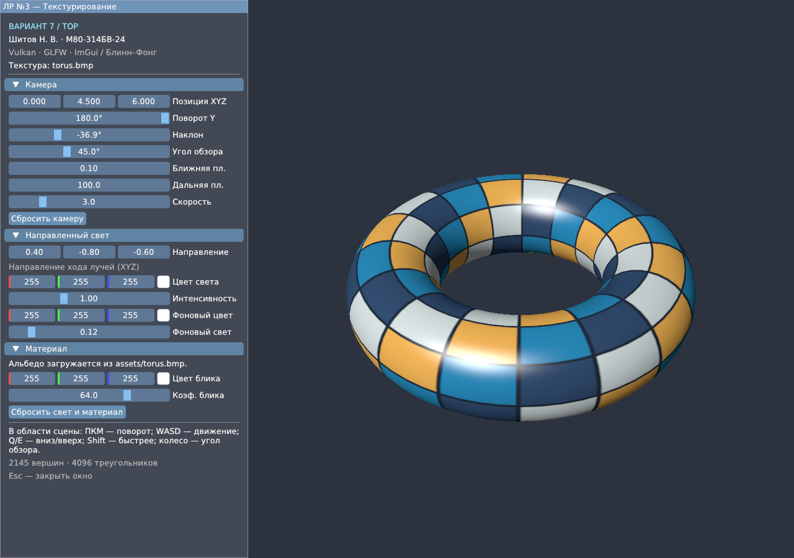
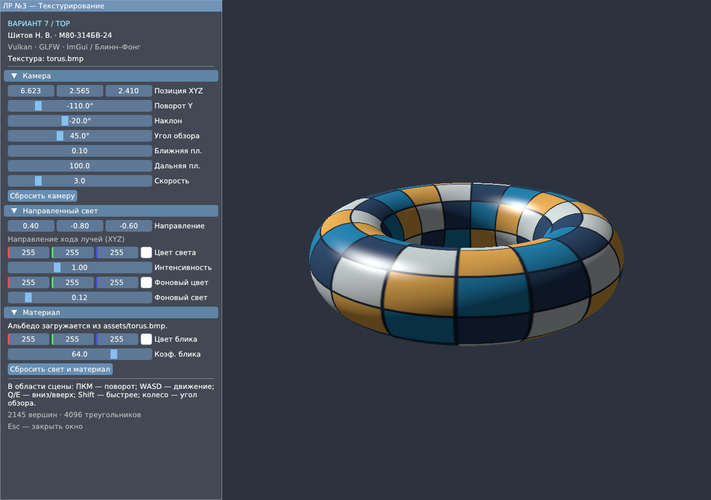
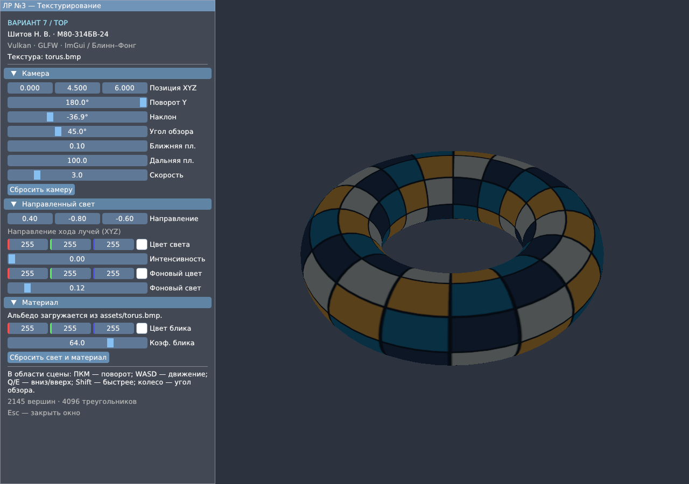

Цель работы — освоить загрузку изображений из файловой системы и наложение текстуры на трёхмерную поверхность средствами Vulkan. Используются C++20, GLFW и Dear ImGui. За основу взята вторая лабораторная работа; объект варианта 7 — тор.
Выполнено базовое задание на оценку 3: на объект наложена одна текстура альбедо без дополнительных эффектов. Вершина содержит позицию, нормаль и текстурные координаты. Вершинные и индексные данные размещаются в памяти GPU и загружаются через staging-буферы. Один набор дескрипторов объединяет динамический uniform-буфер и одну пару изображение–сэмплер. Push-константы не используются.
Тор с большим радиусом R = 1,4 и радиусом трубки r = 0,5 задан вокруг оси Y. Поверхность и единичная нормаль вычисляются по параметрам u, v ∈ [0; 2π]:
p(u,v) = ((R + r cos v) cos u, r sin v,
(R + r cos v) sin u)
N(u,v) = (cos v cos u, sin v, cos v sin u)
UV(u,v) = (u / (2π), v / (2π))
Сетка состоит из 64 сегментов вдоль большого кольца и 32 вдоль трубки. Каждая ячейка разбивается на два треугольника. Для текстурирования добавлены копии вершин на обоих периодических швах: (64 + 1) × (32 + 1) = 2145 вершин и 64 × 32 × 2 = 4096 треугольников.
У совпадающих по положению и нормали вершин шва одна UV-координата равна 0, а другая — 1. Благодаря этому координаты внутри треугольника интерполируются в пределах соседней ячейки, без перехода через всю текстуру. Геометрическая поверхность остаётся замкнутой.
Структура Vertex занимает 32 байта: позиция — 12, нормаль — 12, UV — 8. Вершинный буфер занимает 68 640 байт. Для 12 288 индексов типа uint32_t выделяется 49 152 байта. Порядок индексов обеспечивает ориентацию лицевых сторон наружу; используется индексная отрисовка с проверкой глубины.
Единственная текстура torus.bmp имеет размер 512 × 256 пикселей. Она читается из assets/torus.bmp и декодируется библиотекой stb_image в RGBA8. Копия исходного изображения приложена в materials. Изображение загружается при инициализации; во время отрисовки процедурная генерация цвета не выполняется.
Для вершин и индексов создаются конечные буферы с требованием DEVICE_LOCAL и назначением TRANSFER_DST. Данные сначала записываются в доступный CPU staging-буфер с назначением TRANSFER_SRC. После vmaFlushAllocation команда vkCmdCopyBuffer переносит их в конечный буфер. Барьер связывает запись стадии TRANSFER с чтением вершин или индексов на стадии VERTEX_INPUT.
Пиксели копируются через staging-буфер в двухмерный VkImage с оптимальной раскладкой и форматом R8G8B8A8_SRGB. Изображение переводится из UNDEFINED в TRANSFER_DST_OPTIMAL, затем выполняется vkCmdCopyBufferToImage. Второй барьер переводит его в SHADER_READ_ONLY_OPTIMAL и разрешает чтение во фрагментном шейдере. Fence завершения загрузки ожидается до освобождения временной памяти.
Для изображения создаются VkImageView и VkSampler. Используются линейная фильтрация и адресация REPEAT по обеим координатам. Текстура содержит один mip-уровень. Формат sRGB преобразует считанный цвет в линейное пространство перед расчётом освещения.
В единственном наборе дескрипторов binding 0 имеет тип UNIFORM_BUFFER_DYNAMIC и доступен обоим шейдерам; binding 1 имеет тип COMBINED_IMAGE_SAMPLER и доступен фрагментному шейдеру. Структура Uniforms согласована с GLSL std140 и занимает 144 байта:
Смещение, байт: 0 — матрица P·V; 64 — камера; 80 — направление и интенсивность света; 96 — цвет света; 112 — ambient и интенсивность; 128 — цвет блика и shininess. stride = ceil(144 / A) · A
A берётся из minUniformBufferOffsetAlignment устройства. На проверенной видеокарте A = 64 байта, поэтому stride = 192 байта. Массив свойств содержит одну запись для одного тора; диапазон дескриптора равен 144 байтам. При vkCmdBindDescriptorSets передаётся динамическое смещение model × stride; для текущего объекта оно равно нулю. Обновление UBO выполняется после ожидания fence предыдущего кадра.
Вершинный шейдер передаёт UV, мировую позицию и нормаль. Тор сразу задан в мировых координатах. Во фрагментном шейдере альбедо a берётся из texture(albedoTexture, UV), затем применяется освещение Блинн–Фонга из предыдущей работы:
C = Ca Ia a + Cl Il (a max(N·L, 0) + Cs S) S = max(N·H, 0)^k, если N·L > 0; иначе S = 0. H = normalize(L + V)
N, L и V — нормаль, направление к источнику и направление к камере. Ca, Ia задают фоновый свет; Cl, Il — направленный; Cs и k — цвет и степень блика. В интерфейсе сохранены настройки камеры, света и материала.

Рисунок 1 — текстура альбедо torus.bmp, 512 × 256 пикселей. Цветные клетки показывают распределение UV.

Рисунок 2 — исходный ракурс. Слева — настройки камеры, направленного и фонового света.
Сборка и запуск выполнены на Windows: MinGW-w64, GCC 16.2, NVIDIA GeForce RTX 4070. Прошли CPU-тесты геометрии, UV и швов, выравнивания UBO, камеры и проекции. Оба шейдера скомпилированы glslc для Vulkan 1.1; BMP декодируется через stb_image.
Семь запусков проверили два ракурса, широкий FOV, изменение размера окна и четыре настройки света. Анализ снимков подтвердил текстуру при ambient, сумму ambient и diffuse, блик и цвет источника. Снимки и журналы находятся в checks/.
Vulkan Validation Layers на этой Windows недоступны: проверка отрисовки не заменяет валидацию Vulkan. Сборка и запуск на Linux здесь не проверялись.

Рисунок 3 — вид сбоку: текстура следует поверхности большого кольца и трубки тора.

Рисунок 4 — только фоновое освещение: рисунок текстуры виден без направленного света и блика.
Реализованы загрузка текстуры из файла, UV-развёртка тора и сэмплирование альбедо. Освоены перенос геометрии и изображения в память GPU, переходы раскладки и динамический UBO с выравниванием. Интерактивное приложение выполняет базовое задание лабораторной работы №3.